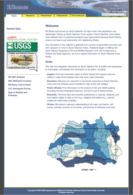
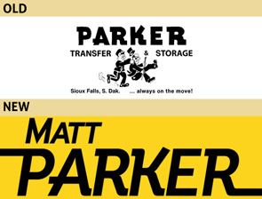

SDRivers.org Website
In 2005 Bertrand Design worked closely with South Dakota State University's Wildlife and Fisheries Department to develop an all-inclusive, dynamic website for users ranging from the average fisherman to the scientific wildlife researcher. The online publication of their search results was a key part of their underwriting process.
SDRivers.org Administration Manual
SDSU's Wildlife and Fisheries Department required documentation for administrating their content management system. Solution? A straightforward user's guide.
Matt Parker for State Senate 2010
 This was an incredible coincidence: one of the hottest fonts on the web, Museo Sans, just happened to fit the letterforms of this old identity of the Parker's transport fleet.
{kind=link}
For what it's worth, Parker did not beat the incumbent. But his yard signs did win best design in the city.
{kind=link}
Bertrand Family Crest
This is personal project involving some deep research into our family name and ancestry. Discoveries along the way? We're related to Napolean's assassin, and the infamous pre-integration era Major League baseball player, and inventor of the Pocket Catch,
Once the rules of heraldry were consulted (there are no rules—we're American), a full-colour "achievement" was commissioned and executed for our family reunion.
Bev's On The River: Poster & Half-page Ad
Every restaurant with a wine cellar hosts tastings as a way to feature their chef and their holdings. At the time, Bev's on the River had Michelin star ambitions. This piece hints at the elegant nightlife awaiting patrons of the wine program.